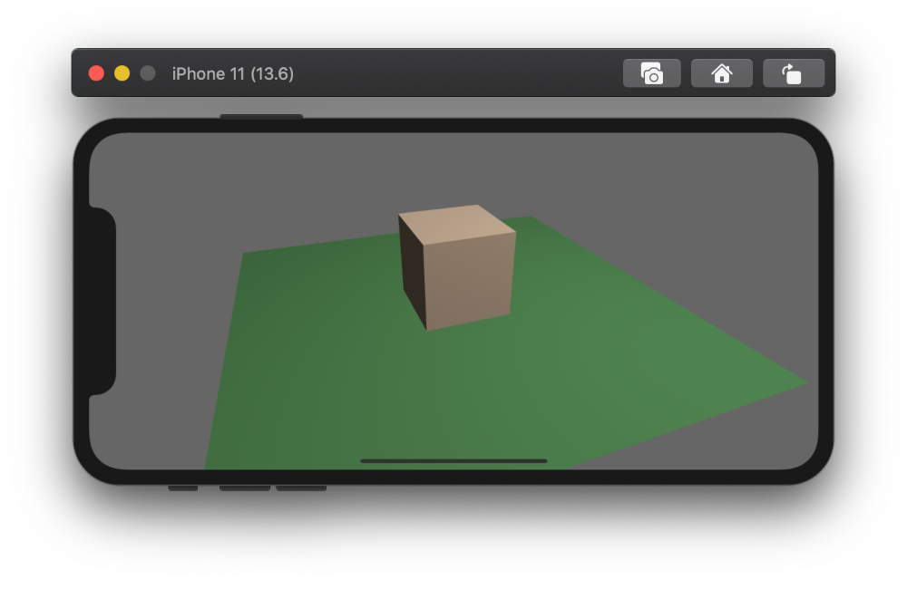

Bevy 0.3
Written on November 03, 2020 by Carter Anderson
(
 @cart
@cart
 @cart_cart
@cart_cart
 cartdev
)
cartdev
)
A little over a month after releasing Bevy 0.2, and thanks to 59 contributors, 122 pull requests, and our generous sponsors, I'm happy to announce the Bevy 0.3 release on crates.io!
For those who don't know, Bevy is a refreshingly simple data-driven game engine built in Rust. You can check out Quick Start Guide to get started. Bevy is also free and open source forever! You can grab the full source code on GitHub.
Here are some of the highlights from this release:
Initial Android Support
You can try out the Bevy Android example by following the instructions here. While many things work, please note that this is very hot off the presses. Some features will work and others probably won't. Now is a great time to dive in and help us close the gaps!

This was a massive group effort that spanned multiple projects:
- Bevy: rewrote bevy-glsl-to-spirv to support android / static libraries (@PrototypeNM1, @enfipy)
- Bevy:
bevy_assetbackend using Android Asset Manager (@enfipy) - Bevy: Touch support (@naithar)
- Bevy: Texture format fix (@enfipy)
- Bevy: UI touch fixes, touch force, and android example (@enfipy)
- Cpal: android audio support (@endragor)
- android-ndk-rs / cargo-apk: fix to support Bevy project structure (@PrototypeNM1)
Initial iOS Support
Bevy can now run on iOS!
You can try out the Bevy iOS example by following the instructions here. This one is also hot off the presses: some features will work and others probably won't.
This was another large group effort that spanned multiple projects:
- Bevy: XCode Project / Example (@simlay with help from @MichaelHills)
- Bevy: Runtime shader compilation using shaderc (@MichaelHills)
- Bevy: Rodio upgrade (@Dash-L)
- Bevy: Touch support (@naithar)
- Winit: Fix iOS portrait view (@MichaelHills)
- RustAudio: iOS support (@simlay and @MichaelHills)
Known issues:
WASM Asset Loading
@mrk-its has been hard at work on expanding Bevy's WASM support. In this release we landed WASM asset loading. You can now load assets when you publish to WASM just like you would on any other platform:
asset_server.load("sprite.png");
If the asset hasn't already been loaded, this will make a fetch() request to retrieve the asset over HTTP.
@mrk-its has also been building a custom WebGL2 bevy_render backend. It is already pretty usable, but its not quite ready yet. Expect more news on this soon!
Touch Input
Bevy now has support for touches:
fn touch_system(touches: Res<Touches>) {
// you can iterate all current touches and retrieve their state like this:
for touch in touches.iter() {
println!("active touch: {:?}", touch);
}
for touch in touches.iter_just_pressed() {
println!("just pressed {:?}", touch);
}
for touch in touches.iter_just_released() {
println!("just released {:?}", touch);
}
for touch in touches.iter_just_cancelled() {
println!("just cancelled {:?}", touch);
}
}
You can also consume raw touch events using the Events<TouchInput> resource.
Asset System Improvements
Asset Handle Reference Counting
Assets are now automatically freed when their "handle reference count" reaches zero. This means you no longer need to think about freeing assets manually:
// Calling load() now returns a strong handle:
let handle = asset_server.load("sprite.png");
// Note that you no longer need to unwrap() loaded handles. Ergonomics for the win!
// Cloning a handle increases the reference count by one
let second_handle = handle.clone();
// Spawn a sprite and give it our handle
commands.spawn(SpriteComponents {
material: materials.add(handle.into()),
..Default::default()
});
// Later in some other system:
commands.despawn(sprite_entity);
// There are no more active handles to "sprite.png", so it will be freed before the next update
Asset Loaders can now load multiple assets
In past releases, AssetLoaders could only produce a single asset of a single type. In Bevy 0.3, they can now produce any number of assets for any type. The old behavior was extremely limiting when loading assets like GLTF files, which might produce many meshes, textures, and scenes.
Sub-Asset Loading
Sometimes you only want to load a specific asset from an asset source. You can now load sub assets like this:
// Mesh0/Primitive0 references the first mesh primitive in "my_scene.gltf"
let mesh = asset_server.load("my_scene.gltf#Mesh0/Primitive0");
AssetIo Trait
The AssetServer is now backed by the AssetIo trait. This allows us to load assets from whatever storage we want. This means on desktop we now load from the filesystem, on Android we use the Android Asset Manager, and on the web we make HTTP requests using the fetch() api.
Asset Dependencies
Assets can now depend on other assets, which will automatically be loaded when the original asset is loaded. This is useful when loading something like a "scene" which might reference other asset sources. We utilize this in our new GLTF loader.
Removed AssetServer::load_sync()
This might rustle some feathers, but AssetServer::load_sync() had to go! This api wasn't WASM friendly, encouraged users to block game execution for the sake of convenience (which causes "hitching"), and was incompatible with the new AssetLoader api. Asset loading is now always asynchronous. Users of load_sync() should instead load() their assets, check load status in their systems, and change game state accordingly.
GLTF Scene Loader
Up until this point, the GLTF loader was painfully limited. It could only load the first mesh with a single texture in a GLTF file. For Bevy 0.3, we took advantage of the asset system improvements to write a new GltfLoader that loads GLTF files as Bevy Scenes, along with all meshes and textures in the files.
Here's Bevy loading the Khronos Flight Helmet example, which consists of multiple meshes and textures!

Here is the complete code for a system that loads a GLTF file and spawns it as a scene:
fn load_gltf_system(mut commands: Commands, asset_server: Res<AssetServer>) {
let scene_handle = asset_server.load("models/FlightHelmet/FlightHelmet.gltf");
commands.spawn_scene(scene_handle);
}
Bevy ECS Improvements
Query Ergonomics
In this release I finally was able to remove the one thing I truly despised in Bevy ECS. In previous versions of Bevy, iterating over the components in a Query looked like this:
for (a, b) in &mut query.iter() {
// The `&mut` here just felt so unnatural
}
// Or if you preferred you could do this
for (a, b) in query.iter().iter() {
// query.iter().iter()? Really???
}
Similarly, retrieving a specific entity's component's looked like this:
if let Ok(mut result) = query.entity(entity) {
if let Some((a, b)) = result.get() {
// access components here
}
}
In Bevy 0.3 you can just do this:
// iteration
for (a, b) in query.iter() {
// sweet ergonomic bliss
}
// entity lookup
if let Ok((a,b)) = query.get(entity) {
// boilerplate be gone!
}
You might naturally be thinking something like:
Why did this take so long? Why would removing a single &mut be hard?
It's a long story! In summary:
- The old api looked the way it did for a reason. It was the result of good design choices that protect against unsafe memory access in a parallel environment.
query.iter()didn't actually return an iterator. It returned a wrapper that held an atomic lock on the component storages. The same was true for the type returned byquery.entity()- Removing these "wrapper types" would have allowed unsafe behavior because another Query could access the same components in a way that violated Rust's mutability rules.
- Due to the iterator implementation and quirks in the rust compiler, removing the wrapper type tanked iteration performance by about ~2-3x.
Fortunately we finally found ways to solve all of these problems. The newly added QuerySets allow us to completely remove the locks (and wrapper types). And by completely rewriting QueryIter we were able to avoid the performance hit that removing the wrapper incurred. Read on for the details!
100% Lockless Parallel ECS
Bevy ECS is now completely lock free. In Bevy 0.2, we made direct World access and "for-each" systems lock free. This is possible because the Bevy ECS scheduler ensures that systems only run in parallel in ways that respect Rust's mutability rules.
We couldn't remove locks from Query systems because of systems like this:
fn conflicting_query_system(mut q0: Query<&mut A>, mut q1: Query<(&mut A, &B)>) {
let a = q0.get_mut(some_entity).unwrap();
let (another_a, b) = q1.get_mut(some_entity).unwrap();
// Aaah!!! We have two mutable references to some_entity's A component!
// Very unsafe!
}
The locks ensured that the second q1.get_mut(some_entity) access panicked, keeping us nice and safe. In Bevy 0.3, a system like conflicting_query_system will fail when the schedule is constructed. By default, systems cannot have conflicting queries.
However there are some cases where a system needs conflicting queries to do what it needs to do. For these cases, we added QuerySets:
fn system(mut queries: QuerySet<(Query<&mut A>, Query<(&mut A, &B)>)>) {
for a in queries.q0_mut().iter_mut() {
}
for (a, b) in queries.q1_mut().iter_mut() {
}
}
By putting our conflicting Queries in a QuerySet, the Rust borrow checker protects us from unsafe query accesses.
Because of this, we were able to remove all safety checks from query.iter() and query.get(entity), which means these methods are now exactly as fast as their World counterparts (which we made lock-free in Bevy 0.2).
Performance Improvements
Bevy had a number of nice performance improvements this release:
- Removed atomic locks from Query access, making Bevy ECS 100% lock free
- Removed archetype "safety checks" from Query access. At this point we have already verified that the given Query access is safe, so we don't need to check again on every call.
- Rewrote
QueryIterto be simpler (and therefore easier to control optimizations for), which allowed us to remove the iterator wrapper without tanking performance. This also resolved some performance inconsistencies where some system permutations performed optimally and others didn't. Now everything is on the "fast path"! - Ported some performance improvements from upstream hecs, which improved iteration over heavily fragmented archetypes and improved component insertion times
Getting an Entity's Component (per 100k, in milliseconds, smaller is better)
Note: these numbers are for getting a component 100,000 times, not for an individual component lookup

This is where the big wins were. By removing locks and safety checks from Query systems, we were able to significantly reduce the cost of retrieving a specific entity's component from within a system.
I included a comparison to Legion ECS (another great archetypal ECS with a parallel scheduler) to illustrate why Bevy's new approach is so cool. Legion exposes a direct "world like" api (called a SubWorld) in its systems. The SubWorld's entry api cannot know ahead of time what types will be passed into it, which means it must do (relatively) expensive safety checks to ensure the user doesn't request access to something they shouldn't.
Bevy's scheduler pre-checks Queries once ahead of time, which allows systems to access their results without any additional checks.
The test was to lookup (and modify) a specific entity's component 100,000 times on each system iteration. Here is a quick rundown of how these tests were performed in each case:
- bevy (world): Direct
Worldaccess usingworld.get_mut::<A>(entity) - bevy (system): A system containing a
Query<&mut A>that accesses the component usingquery.get_mut(entity) - legion (world): Direct
Worldaccess usinglet entry = world.entry(entity); entry.get_component_mut::<A>() - legion (system): A system with
SubWorldaccess usinglet entry = world.entry(entity); entry.get_component_mut::<A>()
It's worth noting that using query.get_component::<T>(entity) instead of query.get(entity) does require safety checks, for the same reason the legion entry api does. We cannot know ahead of time what component type a caller will pass into the method, which means we must check it to make sure it matches the Query.
Additionally, here are some relevant ecs_bench_suite results (omitted benchmarks had no significant change):
Component Insertion (in microseconds, smaller is better)

Component Add/Remove (in milliseconds, smaller is better)

Fragmented Iteration (in nanoseconds, smaller is better)

Thread Local Resources
Some resource types cannot (or should not) be passed between threads. This is often true for low level apis like windowing, input, and audio. It is now possible to add "thread local resources" to the Resources collection, which can only be accessed from the main thread using "thread local systems":
// in your app setup
app.add_thread_local_resource(MyResource);
// a thread local system
fn system(world: &mut World, resources: &mut Resources) {
let my_resource = resources.get_thread_local::<MyResource>().unwrap();
}
Query Api Changes
First, to improve clarity we renamed query.get::<Component>(entity) to query.get_component::<Component>(entity). We now return the "full" query result for a specific entity using query.get(entity).
To allow multiple concurrent reads of Queries (where it is safe), we added separate query.iter() and query.iter_mut() apis, as well as query.get(entity) and query.get_mut(entity). Queries that are "read only" can now retrieve their results via an immutable borrow.
Mesh Improvements
Flexible Mesh Vertex Attributes
Bevy meshes used to require exactly three "vertex attributes": position, normal, and uv. This worked for most things, but there are a number of cases that require other attributes, such as "vertex colors" or "bone weights for animation". Bevy 0.3 adds support for custom vertex attributes. Meshes can define whatever attributes they want and shaders can consume whatever attributes they want!
Here is an example that illustrates how to define a custom shader that consumes a mesh with an added "vertex color" attribute.

Index Buffer Specialization
Rendering meshes often involves using vertex "indices" to cut down on duplicate vertex information. Bevy used to hard code the precision of these indices to u16, which was too small for some cases. Now render pipelines can "specialize" based on a configured index buffer, which now defaults to u32 to cover most use cases.
Transform Re-Rewrite
Transforms are important to get right. They are used in many slices of the engine, user code touches them constantly, and they are relatively expensive to compute: especially transform hierarchies.
In the last release, we vastly simplified Bevy's transform system to use a consolidated Transform and GlobalTransform instead of multiple separate Translation, Rotation, and Scale components (which were synced to Transform and GlobalTransform). This made the user-facing api/dataflow simpler, as well as the underlying implementation. The Transform component was backed by a 4x4 matrix. I pressed the big green "merge" button ... happy that we had solved the Transform problem once and for all!
It turns out there was still more work to be done! @AThilenius pointed out that using a 4x4 matrix as the source of truth for an affine transform accumulates error over time. Additionally, the Transform api was still a little cumbersome to use. At the suggestion of @termhn we decided to investigate using a "similarity" as the source of truth. This had the following benefits:
- no more error accumulation
- we could directly expose translation/rotation/scale fields, which simplified the api significantly
- cheaper to store and cheaper to compute hierarchies in some cases
We collectively decided this was a good path forward and now we have a re-rewrite that is even better. Yes this is another breaking change, but thats why we label Bevy as being in the "experimentation phase". Now is the time to break things as often as possible to ensure that we find good apis that will stand the test of time.
This is what the new Transform api looks like in a Bevy ECS system:
fn system(mut transform: Mut<Transform>) {
// move along the positive x-axis
transform.translation += Vec3::new(1.0, 0.0, 0.0);
// rotate 180 degrees (pi) around the y-axis
transform.rotation *= Quat::from_rotation_y(PI);
// scale 2x
transform.scale *= 2.0;
}
Compared to the last version this is easier to use, more correct, and should also be slightly faster.
Gamepad Settings
The newly added GamepadSettings resource gives developers the ability to customize gamepad settings on a per-controller, per-axis/button basis:
fn system(mut gamepad_settings: ResMut<GamepadSettings>) {
gamepad_settings.axis_settings.insert(
GamepadAxis(Gamepad(0), GamepadAxisType::LeftStickX),
AxisSettings {
positive_high: 0.8,
positive_low: 0.01,
..Default::default()
},
);
}
Plugin Groups
If you've used Bevy, you're probably familiar with this part of App initialization:
app.add_default_plugins();
This adds the plugins for all of the "core" engine functionality (rendering, input, audio, windowing, etc). It was straightforward, but also very static. What if you don't want to add all of the default plugins? What if you want to create your own custom set of plugins?
To resolve this, we added PluginGroups, which are ordered collections of plugins that can be individually enabled or disabled:
// This:
app.add_default_plugins()
// Has been replaced by this:
app.add_plugins(DefaultPlugins)
// You can disable specific plugins in a PluginGroup:
app.add_plugins_with(DefaultPlugins, |group| {
group.disable::<RenderPlugin>()
.disable::<AudioPlugin>()
});
// And you can create your own PluginGroups:
pub struct HelloWorldPlugins;
impl PluginGroup for HelloWorldPlugins {
fn build(&mut self, group: &mut PluginGroupBuilder) {
group.add(PrintHelloPlugin)
.add(PrintWorldPlugin);
}
}
app.add_plugins(HelloWorldPlugins);
Dynamic Window Settings
Bevy provides a backend-agnostic windowing api. Up until this point, window settings could only be set once at app startup. If you wanted to set window settings dynamically, you had to directly interact with window backends (ex: winit).
In this release we added the ability to dynamically set window properties at runtime using the Bevy window abstraction:
// This system dynamically sets the window title to the number of seconds since startup. Because why not?
fn change_title(time: Res<Time>, mut windows: ResMut<Windows>) {
let window = windows.get_primary_mut().unwrap();
window.set_title(format!(
"Seconds since startup: {}", time.seconds_since_startup
));
}
Documentation Search-ability
The bevy crate documentation search function now returns results for all sub-crates (like bevy_sprite). Due to how documentation is generated for re-exported crates, by default the bevy search index only covered the "prelude". @memoryruins found a way to fix this problem by creating new modules and exporting the contents of each crate within those modules (as opposed to aliasing the crates).

Change Log
Added
- Touch Input
- iOS XCode Project
- Android Example and use bevy-glsl-to-spirv 0.2.0
- Introduce Mouse capture API
bevy_input::touch: implement touch input- D-pad support on MacOS
- Support for Android file system
- app: PluginGroups and DefaultPlugins
PluginGroupis a collection of plugins where each plugin can be enabled or disabled.
- Support to get gamepad button/trigger values using
Axis<GamepadButton> - Expose Winit decorations
- Enable changing window settings at runtime
- Expose a pointer of EventLoopProxy to process custom messages
- Add a way to specify padding/ margins between sprites in a TextureAtlas
- Add
bevy_ecs::Commands::removefor bundles - impl
DefaultforTextureFormat - Expose current_entity in ChildBuilder
AppBuilder::add_thread_local_resourceCommands::write_world_boxedtakes a pre-boxed world writer to the ECS's command queueFrameTimeDiagnosticsPluginnow shows "frame count" in addition to "frame time" and "fps"- Add hierarchy example
WgpuPowerOptionsfor choosing between low power, high performance, and adaptive power- Derive
Debugfor more types: #597, #632 - Index buffer specialization
- More instructions for system dependencies
- Suggest
-Zrun-dsymutil-nofor faster compilation on MacOS
Changed
- ecs: ergonomic query.iter(), remove locks, add QuerySets
query.iter()is now a real iterator!QuerySetallows working with conflicting queries and is checked at compile-time.
- Rename
query.entity()andquery.get()query.get::<Component>(entity)is nowquery.get_component::<Component>(entity)query.entity(entity)is nowquery.get(entity)
- Asset system rework and GLTF scene loading
- Introduces WASM implementation of
AssetIo - Move transform data out of Mat4
- Separate gamepad state code from gamepad event code and other customizations
- gamepad: expose raw and filtered gamepad events
- Do not depend on
spirv-reflectonwasm32target - Move dynamic plugin loading to its own optional crate
- Add field to
WindowDescriptoron wasm32 targets to optionally provide an existing canvas element as winit window - Adjust how
ArchetypeAccesstracks mutable & immutable deps - Use
FnOnceinCommandsandChildBuilderwhere possible - Runners explicitly call
App.initialize() - sRGB awareness for
Color- Color is now assumed to be provided in the non-linear sRGB colorspace.
Constructors such as
Color::rgbandColor::rgbawill be converted to linear sRGB. - New methods
Color::rgb_linearandColor::rgba_linearwill accept colors already in linear sRGB (the old behavior) - Individual color-components must now be accessed through setters and getters.
- Color is now assumed to be provided in the non-linear sRGB colorspace.
Constructors such as
Meshoverhaul with custom vertex attributes- Any vertex attribute can now be added over
mesh.attributes.insert(). - See
example/shader/mesh_custom_attribute.rs - Removed
VertexAttribute,Vertex,AsVertexBufferDescriptor. - For missing attributes (requested by shader, but not defined by mesh), Bevy will provide a zero-filled fallback buffer.
- Any vertex attribute can now be added over
- Despawning an entity multiple times causes a debug-level log message to be emitted instead of a panic: #649, #651
- Migrated to Rodio 0.12
- New method of playing audio can be found in the examples.
- Added support for inserting custom initial values for
Local<T>system resources #745
Fixed
- Properly update bind group ids when setting dynamic bindings
- Properly exit the app on AppExit event
- Fix FloatOrd hash being different for different NaN values
- Fix Added behavior for QueryOne get
- Update camera_system to fix issue with late camera addition
- Register
IndexFormatas a property - Fix breakout example bug
- Fix PreviousParent lag by merging parent update systems
- Fix bug of connection event of gamepad at startup
- Fix wavy text
Contributors
A huge thanks to the 59 contributors that made this release (and associated docs) possible!
- alec-deason
- alexb910
- andrewhickman
- blunted2night
- Bobox214
- cart
- CGMossa
- CleanCut
- ColdIce1605
- Cupnfish
- Dash-L
- DJMcNab
- EllenNyan
- enfipy
- EthanYidong
- Gregoor
- HyperLightKitsune
- ian-h-chamberlain
- J-F-Liu
- Jerald
- jngbsn
- joshuajbouw
- julhe
- kedodrill
- lberrymage
- lee-orr
- liufuyang
- MarekLg
- Mautar55
- memoryruins
- mjhostet
- mockersf
- MrEmanuel
- mrk-its
- mtsr
- naithar
- navaati
- ndarilek
- nic96
- ocornoc
- Olaren15
- PrototypeNM1
- Ratysz
- Raymond26
- robertwayne
- simlay
- simpuid
- smokku
- stjepang
- SvenTS
- sY9sE33
- termhn
- tigregalis
- Vaelint
- W4RH4WK
- walterpie
- will-hart
- zgotsch
- Zooce